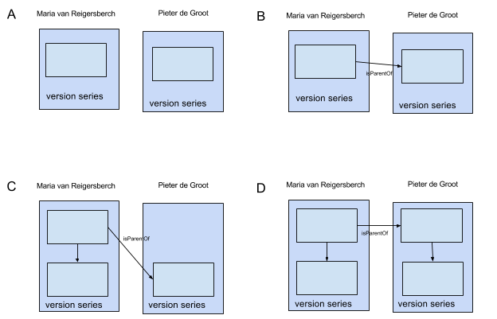

|
Note
|
This software is developed and supported by the KNAW Humanities Cluster in the Netherlands.
|
|
Warning
|
Links to files are broken. I have reported the issue at github.com/asciidoctor/asciidoctor/issues/1903 |
Introduction
Background
Timbuctoo is aimed at historians doing interpretative research. Such a researcher collects facts from various documents, interprets and structures them, and creates tables of these facts. The researcher then uses this new dataset either as an object to do analysis on, or as an index that allows them to look at their sources from a distance quickly stepping back to the original source for the real interpretative work.
As such an historian you often need to categorize your findings. For example: you keep track of birthplaces. You then need to decide how to write down the birthplace
-
Do you use the name of the city, or the burrough?
-
Do you use the current name or the name when the person was born?
-
If your dataset spans a long time you might have two different cities on the same geographical location. Are they one name or more?
These judgements are sometimes the core of your research and sometimes incidental to it. Timbuctoo aims to make it easier to publish your research dataset and then to re-use other people’s published datasets. To continue the example: another researcher might create a dataset containing locations, their coördinates and names and how that changed over time. You can then re-use that dataset and link to the entries instead of typing a string of characters that a humand might correctly interpret or not.
There are database-like systems, so storing your data somewhere is easy. However, there are not many tools that will:
-
allow you to upload any dataset without having to write code, (for most database importing large datasets will require you to write some amount of SQL, SPARQL or batch processing code)
-
expose your dataset so that it can be retrieved by another researcher (a http download and a REST interface)
-
allow the researcher to base it’s new dataset on that existing dataset
-
with a provenance trail
-
without having to agree on the data model
-
without having to agree on all data contents
-
-
keep track of updates to the source dataset and allow the user to subscribe to these changes
Which is the added value timbuctoo will bring.
A lot of applications go quite some part of the distance however, so timbuctoo mostly glue between these applications.
History
Timbuctoo was started in 2012.
Getting up and running
Sneak peek
To get a quick look at timbuctoo go to: acc.repository.huygens.knaw.nl
1. System requirements
2. Building it
This tool has been verified to work on Redhat 6. To build your own version, you can either have 'java 8' and 'maven 3' installed or use the maven3 docker container.
-
build using
mvn clean package
3. Running it
-
Do a quick debug run using
./devtools/debugrun/debugrun.shordocker-compose up. If you do not use docker the external services, such as solr won’t be started. Timbuctoo will still run and the API will run fine, but some urls in the web GUI won’t work.
To run a real version you’d run all services mentioned in the docker-compose.yml file yourself and start timbuctoo using ./timbuctoo-instancev4/target/appassembler/bin/timbuctoo server <your config>.yaml.
You can use example_config.yaml for inspiration.
-
After launching it you should be greated by a login page.
-
After logging in you should be able to upload an excel file (or download the default excel file). The wizard will guide you onwards.
-
When a dataset is uploaded you can edit it, and query it.
4. installing it
-
install/package timbuctoo by copying the target/appassembler folder wherever you like (i.e.
mv timbuctoo-instancev4/target/appassembler/ my-install-location
Software Components
Overview
Timbuctoo is a set of REST api’s on top of a graph database that stores RDF. REST
- Changelog
-
The changelog will provide a chronological list of additions or deletions filtered by either the entity or the dataset. The changelog API isn’t available yet, but the data to generate it is already being saved. So when the API becomes available it will expose the data retroactively.
- RDF-publication
-
We will publish the RDF data in the CLARIAH RDF exchange format.
- The V2.1 API
- CRUD
-
The crud service offers an interpreted view of the RDF data. It might for example fold a list expressed as blank nodes in RDF into the the entity that references them. Provenance information is included as part of the entity it belongs to.
- Metadata
-
A dataset contains information about the property names (predicates) that are in use etc. This information cannot be retrieved from the CRUD endpoint, but can be retrieved from here. This module is not really documented, you can read the source though.
- Autocomplete
-
Timbuctoo allows you to do a quick search on the labels (aka displaynames) of the entities. This is implemented as part of the CRUD module.
- Tabular data importer
-
This package allows you to upload something that is tabular-like and have it converted to a basic RDF representation (just records pointing to the next record). The data entered like this is not yet part of the changelog, but should be.
- RML processor
-
Once you have uploaded some data in a tabular representation you can call the RML processor with an RML document to generate RDF which is then inserted into the database. The processor calls the RDF importer in the background with the generated triples.
- RDF importer
-
The RDF importer can be provided with a dataset in n-triples format that will then be inserted as-is into the database.
- Resource sync
-
Timbuctoo can discover and download datasets from remote servers that contain resourcesync descriptions.
- Search GUI & Index crawler
-
== Summary
These ruby scripts harvest the timbuctoo CRUD endpoint, format the data and send it to solr.
- Discover-GUI
-
A gui that is not aimed at precise querying, but rather to get a high-level overview of the data so that you know what queries to write.
- Dataset-search
-
find subjects using their properties and then find the datasets that contain them
- Data curation tools
-
Tools for cleaning up datasets. We’re mostly implementing this by working together with existing tools.
- Data-export
-
Render the timbuctoo data as RDF, graphviz and whatnot. This epic might also focus on generating data representations in a semantic form that can be well imported by other tools. (i.e. use the proper date-time encoding or geo-coordinates encoding)
- Dataset-interdependencies
-
Be able to depend on other datasets.
-
Link to RDF subjects in a specific other dataset
-
Import (parts of) other datasets into your own dataset
-
Create a new (read-only?) dataset that is fully dependent on other datasets
-
Next to these core endpoints we also have:
- An authentication endpoint
-
This allows users to sign in. We will probably remove the code once the project that we’re part of (CLARIAH) provides a good openid2 implementation.
- Authorization handling
-
User management that specifies who is allowed to see your data. Currently only a basic form is implemented (only you are allowed to edit your own datasets).
- A D3 graph render endpoint
-
This will probably be removed after we have built the new CRUD Api
- A raw query endpoint
-
This is for development use only
- A jsenv endpoint
-
This is a quick way to pass some data from the configuration file to the javascript applications. We’re not sure if we’re keeping this around.
These are all the user facing components. Other packages are supporting these components.
Database access / core
Context
We are using a database, but we’re not convinced that it’s the best one. We would like to be able to switch to other databases and the evaluate whether other databases make more sense.
Furthermore TinkerPop requires us to handle transactions thoughtfully but provides a rather lax API. We’d like to access the database only in a correct manner.
Goal
We add three classes
-
TransactionEnforcer that helps to wrap all database using work in a transaction. The transactionEnforcer API makes it clear to the client code when transaction starts and makes it impossible to forget to close it.
-
TimbuctooActions that is autocloseable around a transaction. It contains the business logic (authorization, UUID generation etc.)
-
DataStoreOperations that is autocloseable around a transaction and performs the actual database work
These classes have the following constraints:
-
~~no two transaction may run at the same time~~ (will be possible once no code uses graphWrapper directly anymore)
-
Each method returns an Immutable Value object without TinkerPop or Neo4j references. (So that Timbuctoo is less dependent on one database implementation)
-
A value object will never hit the database to lazy load more data. (so that the client code can more easily reason about performance. Only db.something() calls will hit the database)
-
A method is quite tightly coupled to the client. While a method may be used by more then one client is has a very tightly defined implementation and re-use is not expected to be the rule. (So that removing some client code will also clearly remove their constraints on the data model)
-
of course, internally methods may re-use each other freely (so that we do not have code duplication)
-
A mutation is a separate method adhering to the same practices as a retrieval method. (a second requirement to make only db.something() calls hit the database)
-
You might have a mutation method that also retrieves data, but this is not the norm. (explicitly mentioned for people who expect full Command Query Separation)
-
The DataStoreOperations methods will only get or mutate state. Triggering or calculating state (such as UUID’s or changeLog information) is done by the TimbuctooActions.
-
You may add a custom DataStoreOperations implementation.
-
We might add code to TimbuctooActions that runs several DataStoreOperation implementations in parallel and reports their performance so we can do experiments on that
Known issues
-
TinkerPopOperations.replaceRelation
-
throws a NotFoundException instead of an AlreadyUpdatedException when the rev of the relation client is not the latest
-
throw a distinct Exception when the client tries to save a relation with different source, target or type. Currently these properties are simply ignored.
Dataflow
The picture below describes the data flow of the update or the retrieval of an entity.
Client API
The client API is our REST API. This where the client request arrive ==== SingleEntity 'SingleEntity' is the REST endpoint that is used for updating an retrieving entities. ==== JsonCrudService 'JsonCrudService' translates the Json input of the REST endpoints to Entity (a data transfer object).
Domain
Domain contains all the actions that are specific for Timbuctoo. ==== TimbuctooActions 'TimbuctooActions' is the interface for interacting with the database from the client. This class manages the Timbuctoo specific information, for example the way the id’s look. ==== DataStoreOperations 'DataStoreOperations' is an interface that contains all the methods needed by 'TimbuctooActions'. To support a new database this class should be implemented.
Database
'TinkerPopOperations' is our implementation of DataStoreOperations.
Data model
Entity
Contains the information of the Entity saved in the database. For example a person or a document. Each Entity has properties. Most Entities have relations.
public interface Entity {
List<TimProperty> getProperties();
List<RelationRef> getRelations();
//...
}TimProperty
Contains the information of the property of an Entity. The TimProperty interface has implementations for all property types used in Timbuctoo. A TimProperty can be a wrapper around a Java type like String, int, boolean or a Timbuctoo custom type like PersonNamesValue and Datable. This way we can provide an implementation (e.g a TinkerPopPropertyConverter implementation, a jersey serializer, or a js client of the API) with a finite list of types that they should be able to handle.
Example
If this is the interface
public abstract class TimProperty {
private final String name;
private final Value value;
public TimProperty(String name, Value value){
this.name = name;
this.value = value;
}
public abstract <Type> Tuple<String, Type> convert(PropertyConverter<Type> propertyConverter) throws IOException;
public String getName() {
return name;
}
public Value getValue() {
return value;
}
}Then we can implement it for two property types like so:
public class PersonNamesProperty extends TimProperty<PersonNames> {
public PersonNamesProperty(String name, PersonNames value) {
super(name, value);
}
@Override
public <Type> Tuple<String, Type> convert(PropertyConverter<Type> propertyConverter) throws IOException {
return propertyConverter.to(this);
}
}
public class StringProperty extends TimProperty<String> {
public StringProperty(String name, String value) {
super(name, value);
}
@Override
public <Type> Tuple<String, Type> convert(PropertyConverter<Type> propertyConverter) throws IOException {
return propertyConverter.to(this);
}
}PropertyConverter
A PropertyConverter converts a Timbuctoo specific type to an output type. It will also convert an output type to a timbuctoo specific type (and thus function like a factory method). The input of PropertyConverter#from is a the property’s name and it’s value, so you can choose which converter to use based on the property name. The from method is responsible for determining what the input value contains and picking the right TimProperty implementation to return.
The to methods all return the same result type because we don’t think adding a type parameter for each result value is needed. They return a Tuple of String, Type where the left contains the propertyName as defined by the converter. This allows a converter to change the name as well. This is currently needed for our database (which prefixes all properties with the collection and dataset name)
public abstract class PropertyConverter<Type>{
public TimProperty from(String name, Type value){
//...
}
protected abstract PersonNamesProperty createPersonNamesProperty(String name, Type value);
protected abstract StringProperty createStringProperty(String name, Type value);
protected abstract Tuple<String, Type> to(PersonNamesProperty property);
protected abstract Tuple<String, Type> to(StringProperty property);
}Example
public class JsonPropertyConverter implements TimPropertyConverter<JsonNode> {
public TinkerPopPropertyConverter(Collection collection) {
//store the collection for later use in deciding what property type
}
protected PersonNamesProperty createPersonNamesProperty(String name, JsonNode value) {
//...
}
protected StringProperty createStringProperty(String name, JsonNode value) {
//...
}
protected Tuple<String, JsonNode> to(PersonNamesProperty property){
//...
}
protected Tuple<String, JsonNode> to(StringProperty property){
//...
}
}public class TinkerPopPropertyConverter implements TimPropertyConverter<Object> {
public TinkerPopPropertyConverter(Collection collection) {
}
protected PersonNamesProperty createPersonNamesProperty(String name, Object value) {
//...
}
protected StringProperty createStringProperty(String name, Object value) {
//...
}
protected Tuple<String, Object> to(PersonNamesProperty property){
//...
}
protected Tuple<String, Object> to(StringProperty propertyName){
//...
}
}RelationRef
Represents a reference of another Entity. It contains information like the name of the relation and the display name of the other Entity. An Entity does not contain teh related entities. Only these RelationRefs.
EntityRelation
Is a way to represent a relation between two Entities. This representation is used when a relation is saved in the database.
TransactionFilter
closes transactions at the end of a request.
This is a stopgap method that should prevent the problems that will be really fixed by the DataAccess class.
-
Dropwizard re-uses threads between requests.
-
neo4j needs a transaction for read actions
-
tinkerpop automatically creates a thread local transaction when needed. (also for read actions)
-
we did not know so we don’t close read transactions at the end of a read action
Together this results in a thread that will not see the changes of another thread. If it had a transaction open since before the other thread had a transaction open.
I do not completely understand it though, because an open transaction should be able to see committed data from another transaction (and I have verified that the data was indeed committed). However this filter does fix the bug.
CRUD
|
Warning
|
We will probably release a new REST API for the crud service, while also maintaining the current API. The current API is sometimes a bit cumbersome to develop against. |
Summary
The crud service offers an interpreted view of the RDF data. It might for example fold a list expressed as blank nodes in RDF into the the entity that references them. Provenance information is included as part of the entity it belongs to.
-
Only the person who changed the entity last and the time at which the change was made is provided at the moment, the exact nature of the change is recorded as well but not displayed yet.
-
No provenance over multiple entities or of automated transformations can be recorded at this moment.
-
The interpretation is currently hard-coded, but we have plans to allow the user to specify an interpretation with the dataset as metadata.
-
The entities returned by the service are currently only provided in a custom JSON format, but we are planning to also provide them as JSON-ld, graphml and n-triples
Context
Timbuctoo offers a REST interface to edit data within different datasets. This API precedes the RDF data model and even the graph database underpinnings. Recently we have performed a clean re-implementation of the crud API based on the graph database to clear out many intermediate layers that are no longer needed.
This package contains code that translates a timbuctoo specific JSON format into changes on the Tinkerpop graph.
Responsibilies
This package is responsible for
-
Parsing various formats (currently excel only)
-
generating "collections" (i.e. tables, sheets, files) containing "rows" of "fields"
-
handling imports of arbitrary size (only limited by the space limitations of the target database)
It is currently not responsible for
-
converting the data to a specific data type (it should output plain text)
-
handling links (i.e. foreign keys or edges)
-
handling data that cannot be expressed as collections of rows
After an import is finished all traces of the original format should be gone.
Data model
The timbuctoo database is divided into datasets. Each Virtual Research Environment used to have it’s own dataset and each dataset would be solely for a specific VRE. Therefore a dataset is itself called a VRE. A VRE has collections. Within a collection there are entities. Each entity belongs to one and only one collection. The collection that an entity belongs to is also refered to as it’s type. When we say type we are also using the singular version of the collection name, when we say collection we always uses the plural form. However, pluralisation is only done by appending an 's' (So a collection of people would have people as type and peoples as collection name).
Instead of using something like OWL same-as relations timbuctoo handled the open information model by letting the reader specify along which VRE an entity should be viewed. When viewing along one VRE the properties from that VRE were shown, requesting the same entity (same identifier) using a different VRE would show different properties. The same identifier would refer to the same vertex, properties were namespaced by their type name. Types are namespaced by the VRE name, making properties also namespaced by their VRE name.
VRE configuration has only recently been moved to the database, it used to be embedded in Java code.
Outside of the normal VRE’s there is a VRE called Admin.
There is also a VRE called Base.
The current data model is based on the lowest common denominator of the data abstraction layer (tinkerpop2) and the database (neo4j). This means that there are:
-
Vertices (what neo4 calls nodes)
-
Properties
-
Edges (a relation between two vertices)
Vertices represent a version of an entity. Properties represent the values of that entity that do not warrant their own identifier. Edges represent the relations between vertices and might have properties of their own (though this happens rarely)
Versioning

(A, B, C & D) The light blue square represents a vertex and thus one version of the entity. In A and B there is only 1 versie of Maria and Pieter, in C there are 2 versions of Maria and 1 of Pieter and in D there are 2 versies of both Maria and Pieter. The set of vertices with the same value for the property tim_id form a singly linked list through edges of the type isVersionOf. These are grouped in a darker blue square and labeled “version series”
(B) When an edge is created between two vertices, no new version is created. Both the vertex and the relations have a created_at property so that one can identify that there was a time when the vertices did exist, but the relation did not.
(C & D) When a property is changed a new version is created. The relations to the old vertex are deleted and new relations are created using the new vertex. These new relations keep their created_at date, so it is possible to find all the vertices that existed while the old vertex was active by following the isVersionOf relation up to the latest version and iterating over its relations.
(Not in the drawing) When a property of a relation is modified a new relation is created and the old one marked as obsolete. similar to vertices.
(not in th drawing) The drawing slightly misrepresents the actual workings of the data persistence code in order to make it easier to understand. In reality the duplication of the object does not happen right before a modification, but directly after a “persistent id” has been received from the handle server. The race conditions that this might introduce are prevented by disallowing writes depending on whether a persistent id is available or not. (There are three states possible: the property is non-existent, the property exists but has the value NULL and the property exists) Variants
The current timbuctoo also code to achieve most of the goals of anansi. These goals are implemented by storing all the data of the different research projects on a certain entity in the same vertex using namespaces for the properties. There is also 1 namespace that contains the “abstract” data that does have meaning within the domain, such as a persons name. De facto this is the data of the first research environment that entered a value for that property. This abstract-level data is currently unused. There is also data that is not domain related, such as the isLatest property. This is again placed in its own namespace.
Contents of this package
-
TinkerpopJsonCrudService is the entry point. It contains methods for creating, reading, updating and deleting entities and will modify the database according to the above schedule.
Tabular data importer
Summary
This package allows you to upload something that is tabular-like and have it converted to a basic RDF representation (just records pointing to the next record). The data entered like this is not yet part of the changelog, but should be.
Context
Timbuctoo should allow users to upload datasets. We find that most of our users produce datasets in a tabular format (as opposed to a tree format or a graph format). This package contains an code to parse streams of tabular data and to generate vertices to represent that data.
Originally this package also contained code to generate edges between the created vertices. This has been removed and replaced with an RML implementation.
Responsibilies
This package is responsible for * Parsing various formats (currently excel only) * generating "collections" (i.e. tables, sheets, files) containing "rows" of "fields" * handling imports of arbitrary size (only limited by the space limitations of the target database)
It is currently not responsible for * converting the data to a specific data type (it should output plain text) * handling links (i.e. foreign keys or edges) * handling data that cannot be expressed as collections of rows
After an import is finished all traces of the original format should be gone.
Data model
Given a dataset called movie information containing a table called actors with the following data:
| first name | rating |
|---|---|
Matt |
42 |
Saoirse |
44 |
you’d get the following graph
Note the following:
-
the _value postfix is needed because we will also store mapping errors next to these values. e.g. if a value is interpreted as foreign key, but it’s target is not available then an error will be stored on the raw entity vertex under
<property>_error -
the property descriptions are stored mostly to be able to traverse them in order.
-
Together with the ordered traversal of the items (
hasNextItem) this allows us to rerender the table as it was uploaded. -
All properties are stored as text, regardless of the datatypes that the source format supports.
Contents of this package
-
BulkUploadService is the entry point. It performs the actual upload an links everything together.
-
loaders contains two variants of an Excel loader at the moment. To add a new loader you’d add an implementation of BulkLoader here.
-
AllSheetLoader loads all columns of all sheets. This is the one that timbuctoo currently uses.
-
StyleAwareXlsxLoader loads only the columns that are marked with a specially named style. This is not used at the moment.
-
parsing state machine contains the actual import logic.
-
savers contains only a Tinkerpop saver at the moment. To load data in a different database you’d add your own implementation of Saver here. To change how the data is stored in the graph you’d change the code in TinkerpopSaver
List of known bugs / issues
Some issues are described from user perspective, from the excel mapping frontend The problem analyses and suggested solutions, however, are written from a backend implementation perspective.
Self referencing entity
-
When I map a new relation for data sheet, and I use the same column as the source column and the target column, I get no errors and I see in the edit interface two relations on the same entity, pointing to the same entity.
Solution: RML mapper should add an error: "child and parent column are the same in join condition".
Mapping of data types
-
Basic type inheritance of archetype: When I map (for instance) a column to a datable field, the field is not mapped as a datable, but as text.
-
Mapping to types of limited values: When I map (for instance) a column to the 'gender' field, the field is mapped as text and may have any value I want.
-
Mapping to lists: I can only map one column to a list. The field is mapped as text and I cannot add new values to this property after the import.
-
The links data type is not supported yet.
There are multiple interconnected issues here, so no clear solution presents itself:
-
One part of the solution must be to start using rdf types for dates and numbers
-
Another might be to make a list of 'known' predicates, which makes the rdf importer treat values correctly (i.e. with lists)
-
One can also imagine the rml mapping frontend generating triples describing the types of certain predicates (i.e. <documentType> <isA> <Admin/documents/list-of-strings-of-limited-values>) — which would mean that property configurations need to be interpreted more by the rdf importer
No validation of the relationType takes place
-
No validation of the relationType takes place: I can easily create a relation like this:
<some person> <hasBirthPlace> <some other person>
Solution suggestions:
-
We need to discuss how to fix this. When reusing a relationType, the source and target entity type should match the Timbuctoo requirements, or should the requirements be dropped? Or something inbetween. 1a. Relationtype configurations should be part of a vre (dataset); they may inherit from an archetypal form, but they should not have to.
Uncertainties about rdfUri lucene index
We have not verified yet whether lucene index entries are thrown away, when the vertices they refer to are deleted. I have seen no indications that this potential problem actually occurs, but this could cause serious sync issues.
RML implementation
Once you have uploaded some data in a tabular representation you can call the RML processor with an RML document to generate RDF which is then inserted into the database. The processor calls the RDF importer in the background with the generated triples.
The code in this package to implements the rml specification. It does not implement any of the datasources itself, but allows you to provide your own implementations.
Context
In timbuctoo we import data in tabular form as a "raw import" and then use a GUI to generate an RML mapping that converts it into RDF. We then import the RDF using our generic RDF importer.
-
This allows us to import many different data formats.
-
It decouples the GUI from the importer which has allowed us to import data that the GUI does not support without having to make the GUI more complex (we can bypass it if needed).
-
It makes our mapping software usable for people who do not use the full timbuctoo stack (by generating basic RDF).
Usage
//First you should generate a Jena Model of the data somehow
//Dependencies:
//The thing that can construct an RmlMappingDocument from a jena model
final rmlBuilder = new JenaBasedReader();
//The thing that constructs dataSource instances as needed.
//This factory should use the contents of the rdfResource to determine what dataSource to create
Function<RdfResource, Optional<DataSource>> dataSourceFactory = rdfResource -> Optional.of(new MyDataSource(rdfResource));
//The thing that responds to errors that can occur in valid RML mappings, such as missing values.
ErrorHandler errorHandler = new ErrorHandler() {
@Override
public void linkError(Map<String, Object> rowData, String childField, String parentCollection, String parentField) {
throw new RuntimeException("Linking failed!");
}
};
//create the mappingDocument instance
final RmlMappingDocument rmlMappingDocument = rmlBuilder.fromRdf(model, dataSourceFactory);
//You can see how it's interpreted using toString()
if (rmlMappingDocument.getErrors().size() == 0) { //check for errors that make the RML mapping invalid
//execute the mapping
rmlMappingDocument.execute(errorHandler).forEach((triple) -> {
System.out.println(triple);
});
}- Implementing a minimal DataSource with shipped JoinHandler
class MyDataSource implements DataSource {
// This wil handle references from one table to another
private final JoinHandler joinHandler = new HashMapBasedJoinHandler();
private final MyData myData;
public MyDataSource(RdfResource rdfResource) {
this.myData = new MyData(rdfResource); // somehow derive the correct data rows for this rdfResource
}
@Override
public Iterator<Row> getRows(ErrorHandler errorHandler) {
return myData
.turnIntoStream()
.map(values -> {
// values in Map should look like this:
// { "columnName": "cellValue", ... }
Map<String, Object> valueMap = transFormValuesOfThisDataRowToValueMap(values);
// This will handle the reference from one data source to another
joinHandler.resolveReferences(valueMap);
return new Row(valueMap, errorHandler);
})
.iterator();
}
@Override
public void willBeJoinedOn(String fieldName, Object referenceJoinValue, String uri, String outputFieldName) {
// This will handle the reference from one data source to another
joinHandler.willBeJoinedOn(fieldName, referenceJoinValue, uri, outputFieldName);
}
}More information on how a JoinHandler can be implemented is documented in the source of link: ./datasource/joinhandlers/HashMapBasedJoinHandler.java[HashMapBasedJoinHandler].
Code layout
The package contains the following folders:
- /rmldata
-
Contains the java representation of the RML rdf classes. The java classes form a tree rooted in RmlMappingDocument. They usually have a method that generates data (i.e.
execute()orgetItems()) and a toString() method that recursively prints the tree. You will normally only interact with the outermost RmlMappingDocument class which calls the other classes recursively. - /rmldata/builders
-
RML contains a bunch of shorthands and the builders contain the logic needed to interpret the RML in context so that the built instances no longer need this context. For example: you can omit the termType in the source mapping document. The
TermMapBuilderwill decide what the termType should be and the resultingRrTermMapwill simply have a property TermType set to the correct value. - /jena
- /rdfshim
-
The library depends on jena at this moment, but we’ve invested some effort to make this a minimal dependency. It should be possible to extract the jena package to a separate package that depends on this library while the library is jena agnostic.
- /datasource
-
The library ships with a JoinHandler interface which can be used by the datasource to handle joins and one sample implementation backed by a HashMap.
Implementation details
Handling of circular and self-referencing data sources (let’s call them tables)
In order for this library to support big datasets without the leverage of querying on-the-fly (which SQL based databases provide), data rows are expected to be streamed per logical source (i.e. RdfResource).
This however introduces the problem of handling tables which refer to each other (possibly with cyclic dependency) as explained in the next sub-sections.
- References without a cycle
-
When exactly one table references exactly one other table this is simply resolved by first mapping the rows of the table that is referred to and then the table that refers to it. Given these tables:
And this original order of mappers:
[
mapperForPersons,
mapperForLocations
]Sort the mappers so that URI’s for Locations are generated before the mappings of persons are performed:
[
mapperForLocations, --> will generate URI's and store them using JoinHandler implementation
mapperForPersons --> will look up URI's for the locations using store in JoinHandler implementation
]- Self reference
-
The solution above does not solve the issue of a table in which one column references another column in the same table. In this case a new mapper is generated (split off) from the original mapper, so that two passes are made through the same datasource. The first pass maps all the values that are not a reference. The second pass maps all the values that are a reference to another column.
Given this table:
And this mapper list:
[
mapperForPersons
]Split off one extra mapper to resolve the URI of person being referenced to by mother_id:
[
mapperForPersons, --> will generate URI's and store them using JoinHandler implementation
mapperForPersons' --> will look up URI's for the mothers using store in JoinHandler implementation
]- Cyclic references
-
In cases where table A references table B and table B references table A there is a circular dependency as well. The same solutions as above apply here: first sort by dependency, then split off any unresolved dependencies. This also works for more complex cases with multiple cycles. The full implementation of sort and split is here: /rml/rmldata/builders/MappingDocumentBuilder.java.
Given this data structure:
And this original order of mappers:
[
zMapper, <--- depends on xMapper
xMapper, <--- depends on yMapper
yMapper, <--- depends on zMapper, aMapper and yMapper (self)
aMapper <--- depends on no mapper
]Sort and split the mappers like this:
[
aMapper, <--- has no dependencies on other mappers having been run
yMapper, <--- depends on aMapper
xMapper, <--- depends on yMapper
zMapper, <--- depends on xMapper
yMapper' <--- depends on yMapper and on zMapper (only one mapper needed to be split off to break 2 cycles.
]Error reporting
R2RML (and thus RML) specifies that data errors should be reported to the client. We implement this by writing errors back to the datasource, allowing the application to present the user with the data rows that triggered invalid input according to his or her specification. For our own datasource the results will be written to neo4j as follows:
Known issues
- Mapping columns
-
You cannot transform a column in RML. The R2RML languages gives you the ability to use an arbitrary SQL query as a datasource which allows for most of the conversions in SQL. RML does not have this support. This is especially annoying for implementing manytomany links and when you want to derive the name of the predicate.
We might implement an extension that allows for referencingMaps in subjectMaps and predicateMaps and an extension that allows you to transform the inputline to aleviate some of this pain.
- Join handling is done by the wrong datasource
-
The index for joining is stored by the datasource that will use the join values. This is perhaps a bit confusing. I can imagine that intuitively the datasource that provides the data also stores the index (technicaly there’s no clear preference).
Upload and mapping states
RDF import
Summary
The RDF importer can be provided with a dataset in n-triples format that will then be inserted as-is into the database.
-
An extra piece of provenance should be generated, listing the person who uploaded the file and the name or url of the file (if available to the server).
-
The endpoint should be able to download datasets from the internet directly.
Context
RDF is a widely used linked data format. Therefore Timbuctoo has to communicate with a with services through the RDF data format. This package contains a mapping to convert RDF to the Timbuctoo native property graph format. The RDF syntax we support are n-quads. Because n-quads are a superset of n-triples we support that format as well.
The code for the RDF import can be found in the package [nl.knaw.huygens.timbuctoo.rdf](github.com/HuygensING/timbuctoo/tree/master/timbuctoo-instancev4/src/main/java/nl/knaw/huygens/timbuctoo/rdf)
Import
There are two options to import data. The first one is can be found at localhost:8080/static/bulk-upload/. This way you can upload a file with n-quads and n-triples. If you want to call the endpoint directly, use localhost:8080/v2.1/rdf/import with the Content-Type 'multipart/form-data'. The form needs a 'VRE_ID'-field and a 'file'-field that contains a file with the triples to upload.
The other possibility is that you POST several lines of n-quads of n-triples to the resource localhost:8080/v2.1/rdf/import. This requires the headers 'VRE_ID' and 'Content-Type' to be set. The 'VRE_ID' can be set to a name of VRE that does not exist yet. The Content-Type must be 'application/n-quads'. The body should contain the triples, with one line for each triple.
If you have a large amount of data or a file containing your triples you want to use the first option. If you just want to try to import a few triples the second option would be an easier choice.
Both imports will create a VRE with the name provided by the header VRE_ID or filled in in the field of the for of the bulk-upload. (Wat gebeurd er met de graph URI van de quad?) After the import has completed you can find your data in the [Edit GUI](localhost:8080/static/edit-gui/) under the dropdown of the VRE you chose the importer to create.
Process
When the data is uploaded, it is processed by the RdfImporter. The RdfImport prepares the import, by creating a new VRE. Then it delegates the import of the triples to the TripleImporter. The TripleImporter lets a TripleProcessor execute one of the [supported cases](#supported-cases). These TripleProcessors add the data to the database. They also add the necessary configuration to the database. This configuration could be adding a new Collection to the database or adding a Property configuration to a Collection.
Supported cases
We support 4 types of triples. These 4 types seem to are enough to support most of the rdf language.
-
Triples that describe a www.w3.org/2000/01/rdf-schema#subClassOf with a for Timbuctoo known archetype. When the object contains no known archetype this subClassOf relation will be treated like every other relation.
-
Triples that describe www.w3.org/2000/01/rdf-schema#type.
-
Triples where the object is a literal.
-
Triples where the object is another resource. This includes subClassOf with a type that is not known as archetype in Timbuctoo.
Each of the cases has its own TripleProcessor in the [triple processor package](github.com/HuygensING/timbuctoo/tree/master/timbuctoo-instancev4/src/main/java/nl/knaw/huygens/timbuctoo/rdf/tripleprocessor).
Hierarchy
An import can result in a combination of the next 3 scenario’s.
No type information available
This is the most basic one. For example when the first triple of the VRE has not www.w3.org/2000/01/rdf-schema#type predicate, the newly created vertex will be added to the 'unknown'-collection of the VRE.
A type without a connection with a known archetype
When type information becomes available, the structure will be transformed to the next structure.
A type with a known archetype
When the type is www.w3.org/2000/01/rdf-schema#subClassOf of a Timbuctoo known archetype. The structure will be transformed to the following structure.
Dependencies
We use [Apache Jena](jena.apache.org/) to convert the triple strings to java objects.
Known issues
Timbuctoo supports edges with inverse names for inverse directions in a data structure called RelationType. Currently mapping via URI of an rdf predicate only works for the regular name of a relation type.
For instance, given these triples:
<amsterdam> <isDeathPlaceOf> <piet> .
<jan> <hasBirthPlace> <Amsterdam> .And a RelationType definition as follows:
{
...,
"regularName": "hasDeathPlace",
"inverName": "isDeathPlaceOf",
"sourceType: "person",
"targetType: "location"
}We currently get these resulting edges:
v[73] --[isDeathPlaceOf]--> v[72]
v[65] --[hasBirthPlace]--> v[73]Where isDeathPlaceOf is a newly generated relationType, in stead of one mapped against the existing relationType.
The expected result would have been:
v[72]--[hasDeathPlace]-->v[73]
v[65] --[hasBirthPlace]--> v[73]Culprit code only looks at RDF_URI_PROP identifying a regular name.
rdf.Database.java[r215]: graphWrapper.getGraph().traversal().V().hasLabel("relationtype").has(RDF_URI_PROP, predicate.getURI());Resource sync
Summary
Timbuctoo can discover and download datasets from remote servers that contain resourcesync descriptions.
Context
The ResourceSync Framework is used to exchange rdf-data with remote quad stores. Features in this package include:
-
nl.knaw.huygens.timbuctoo.remote.rs.xml - marshal and unmarshal sitemap documents to and from java classes
-
nl.knaw.huygens.timbuctoo.remote.rs.discover - discover and navigate a remote ResourceSync document tree
-
nl.knaw.huygens.timbuctoo.remote.rs.view - render the result of an expedition for json.
-
nl/knaw/huygens/timbuctoo/remote/rs/ResourceSyncService.java - central service
-
nl/knaw/huygens/timbuctoo/server/endpoints/v2/remote/rs/Discover.java - web service API
Data model
The resource sync specification describes how various documents interlink in order to describe a set of resources and where the entrypoints should be placed. In it’s simplest form it is just one file containing a directory listing with a predefined name. This is needed because the HTTP spec itself does not define a "list" command. Resourcesync is a set of embelishments on the sitemap.xml de-facto standard. Timbuctoo uses resourcesync to discover datasets at a source and to get the list of files that comprise the dataset.
The document linked above provides the full spec, but we found it convenient to draw a picture of the various documents:
The horizontal arrows indicate entrypoints. If you provide timbuctoo (or another resourcesync destination) with a url it may try to find a link header/link tag, a resourcesync file in the folder .well-known at the root of the server, or a robots.txt. Each file provides links downwards, optionally they might also provide a link upwards. A source description contains links to one or more capability lists, each list is considered to contain 1 dataset by timbuctoo. A capability list will link to one or more files via a resource (index) list. All files in the resource list are considered to be part of the same dataset. A capability list may also point to a resource dump and/or changesets, these features are currently not supported and will be ignored.
Walking up the resource chain is also not yet implemented.
So to create a resourcesync capable server for timbuctoo you should:
-
Put a source description at
/.well-known/resourcesyncon your server -
Fill it with links to capability lists (1 per dataset that you wish to publish)
-
Fill them with links to Resource lists
-
Fill those with links to the actual data files in one of the supported rdf formats (see below)
Valid resources
Timbuctoo cannot sync every filetype on the internet, only files containing rdf in several of the more well-known serialisation formats.
To indicate the serialisation format you can specify the mimetype in the optional md field (meta data field) for each url from the resource list.
Alternatively you can use a file extension to indicate the type of file.
The explicit mimetype overrules the file extension.
The filetypes that we can currently import are:
-
text/turtle (.ttl)
-
application/rdf+xml (.rdf)
-
application/n-triples (.nt)
-
application/ld+json (.jsonld)
-
text/trig (.trig)
-
application/n-quads (.nq)
-
application/trix+xml (.trix)
-
application/rdf+thrift (.trdf)
So we expect an item resource list will look like:
...
<url>
<loc>http://localhost/.well-known/resourcesync/dataset1/resource2.nq</loc>
<rs:md type="application/n-quads"/> <!-- this line is optional, but can be used to override the extension -->
</url>
...Steps to test the API
Got to the folder {timbuctoo-root}/documentation/resourcesyncexample.
Simply run docker-compose up and the service will start at localhost port 80 (default http port).
Open the uri localhost/.well-known/resourcesync to list the resource sync files.
Contents of this example server
According to the resource sync spec we placed the source description (sourcedescription.xml) in the ./well-known/resourcesync folder.
This source description sums up the available.
Another option is robots.txt that points to the resource list of dataset1.
The third option is to use an html or a response with a link to the capability list of a data set.
And example of this is html_with_link.html in teh folder of dataset2.
For more information see: www.openarchives.org/rs/1.0/resourcesync#FrameworkOrg
-
localhost:8080/v2.1/remote/rs/discover/listgraphs/http%3A%2F%2Flocalhost - list the graph iri’s at the remote site
-
localhost:8080/v2.1/remote/rs/discover/listsets/http%3A%2F%2Flocalhost - same as previous, agnostic to base64-convention
-
localhost:8080/v2.1/remote/rs/discover/framework/http%3A%2F%2Flocalhost - flat representation of the ResourceSync Framework documents
-
localhost:8080/v2.1/remote/rs/discover/tree/http%3A%2F%2Flocalhost - hierarchical representation of the ResourceSync Framework documents
Working with the ../remote/rs/xml package
When downloading a ResourceSync doument we do not always know whether we find a <sitemapindex> or a <urlset>. The two kinds of document are represented as java classes Urlset and Sitemapindex, both have a common superclass, RsRoot. The class RsBuilder in this package will take a variety of input types and produces an Optional of RsRoot. If the unmarshal operation succeeded then either one of the methods
Optional<Urlset> getUrlset() or Optional<Sitemapindex> getSitemapindex() will yield.
The RsBuilder class also has a convenience method for marshaling a RsRoot subclass to its xml-representation: String toXml(RsRoot rsRoot, boolean formattedOutput). If needed this class could be extended to marshal to different types: toXmlString, toXmlFile etc.
To build a ResourceSync document from java, the JAXB-classes can be used and populated with values. However, extensive syntax checking is not done. To build valid ResourceSync documents you still need to consult the documentation.
Working with the ../remote/rs/discover package
The principle behind the AbstractUriExplorer and Result<?> classes is agnostic to the ResourceSync Framework. It presents the opportunity to explore any URI and relate it to some kind of response or the absence of it. In case of a response, the response can be converted through some kind of function to some java class, the 'content' of the Result. Also any errors while getting the response or during conversion will be stored in the Result instance. Not handling errors in this code is natural. The maturity of possible errors will have a cause that is on the remote end. Here we register errors only to report them to end users.
The above abstraction comes together in the AbstractUriExplorer method with the signature
<T> Result<T> execute(URI uri, Function_WithExceptions<HttpResponse, T, ?> func)
Furthermore, the principle that any document on the internet can have incoming links and outgoing links is expressed in the Result class with parents (for incoming links) and children (for outgoing links).
The ResourceSync documents on a remote site can be seen as a tree or network; all documents have relations of some type to other documents. With the help of the concrete classes LinkExplorer and RsExplorer such a network can be explored. The Expedition class uses these explorers to test four methods of discovering a remote network of ResourceSync documents. At the moment an Expedition discovers all ResourceSync documents at the remote site, which might be overkill in case we are looking for a particular document and the remote site has substantial amounts of related documents.
@ToDo: Introduce a Navigator class that is handed through
Expedition.exploremethods up to theRsExplorerclass and that, having been given a target, knows whether the exploration has to go up, down or sideways through parent and child links in order to reach the target document. The enumCapabilityin the xml package already knows about parent and child relations between the various document types and might be useful in this navigation attempt.
All results come together in a ResultIndex, which is essentially a collection of mappings between URIs and Result<?>`s. The `ResultIndexPivot class is a wrapper around such a ResultIndex that facilitates data summarizations. Of course the ResultIndex itself can be used as a starting point to 'stream' summarizations without intermediate reduce operations.
Working with the ../remote/rs/view package
This package has several 'views' on results and result details that are shaped for (one way) Json serialization. Classes that take a ResultIndex are marked with the word 'Base': SetListBase, FrameworkBase, TreeBase. The constructors of these classes take the result detail they are supposed to render and an Interpreter which introduces some flexibility on how a detail is rendered. The Interpreter and Interpreters classes should be extended with whatever interpreters are needed for more sophisticated renderings. Of course in such a case also particular methods in the views have to be adopted to make use of the interpreter.
The Discover API
The class nl.knaw.huygens.timbuctoo.server.endpoints.v2.remote.rs.Discover handles API calls that enable discovering a remote ResourceSync source. A CLARIAH-introduced convention of communicating the graph iri through the name of a directory is provided by means of an interpreter as mentioned in the previous paragraph. The methods listSets and listGraphs are essentially the same, except that the latter method uses the Interpreters.base64EncodedItemNameInterpreter. Thus reducing the impact of changes in perhaps temporary conventions to a minimum.
What remains to be done
-
be able to handle "resource index lists" in discovery and download
-
resourcesync discovery should only request the source description document if you pass it a full url. (It currently also downloads all capability lists)
-
resourcesync discovery walks the up-chain to get to the source description document if you pass a secondary level document (capabilitylist or resourcelist
-
resourcesync discovery returns a list with only the secondary level document if the up-chain cannot be walked
-
choose a format for describing the datasets and link it using
describedby(something like dcat or VOID ) and make the discovery use that information for presenting the data to the user.
Resource sync example server
Background
Timbuctoo should be able to import RDF-data (n-quads) provided by a resource sync server. To be able to test this functionality.
How to use
Simply run docker-compose up and the service will start at localhost port 80 (default http port).
Open the uri localhost/.well-known/resourcesync to list the resource sync files.
Contents of this example server
According to the resource sync spec we placed the source description (sourcedescription.xml) in the ./well-known/resourcesync folder.
This source description sums up the available.
Another option is robots.txt that points to the resource list of dataset1.
The third option is to use an html or a response with a link to the capability list of a data set.
And example of this is html_with_link.html in teh folder of dataset2.
For more information see: www.openarchives.org/rs/1.0/resourcesync#FrameworkOrg
Solr index script
Summary
These ruby scripts harvest the timbuctoo CRUD endpoint, format the data and send it to solr. For more info follow the link below.
User guide
A user guide has not been written yet
API documentation
Development process
Releases
Bug tracking
Additional information
Presentations
Related work
Some things that timbuctoo will not do, and that you can use other software for:
-
present the data in a faceted search (for this we’re building a different tool that subscribes to timbuctoo’s data)
-
clean up datasets (for this we point you to openrefine and karma)
-
visualize the data (for this we’ll expose the data in timbuctoo in such a way that it can be picked up by tools such as palladio or gephi)
We will offer a basic editing interface but we’ll also actively try to allow the data to be edited in external tools such as google spreadsheets, openrefine or excel.
Databases
For most databases the answer is the same: timbuctoo is not a database, but rather it uses a database and adds a REST API and related ontotext.com/products/graphdb/
triple stores
Database wrappers
- Sandman
- Postgres-rest
- firebase and other Baas-es
-
no interlinking and transclusion of datasets
mapping languages
X3ML::https://github.com/delving/x3ml 139.91.183.3/3M/ R2RML:: XSLT:: JSON-LD framing:: XML2RDF:: SQuaRE:: resources.visualdataweb.de/paper4.pdf === harmonization tools GoogleRefine/OpenRefine:: karma:: tabulapdf:: UIMA (entity extraction) Gate (entity extraction) Silk (link discovery) Datagraft:: datagraft.net/ (github.com/dapaas)
map4rdf lodlive
- xanadu
-
At a distance, Xanadu looks like a well-thought out approach at exchanging and re-using data. The problems that are most similar are (1) keeping track of owner/authorship while having that enables and foster’s re-use (2) keeping control of the data that was cited without having to depose snapshots at digital heritage institutions. However, RDF probably differs too much from text to be able to apply these ideas. You usually exchange it in some serialised, textual, form, but it has no predefined sort-order and re-use/transclusion is not necessarily in a few blocks. We’re not aware of any research for building a system that fulfills the xanadu requirements for structured data
- Pelagios
-
dlib.nyu.edu/awdl/isaw/isaw-papers/7/simon-barker-desoto-isaksen/ We’re thinking about providing the pelagios API’s from withing timbuctoo.
- Salt